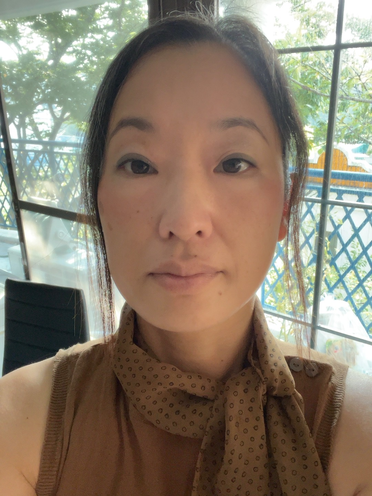

Society journalInternational Medical Education (IME)
Academic Society for International Medical Education
We bring together medical researchers and educators who are internationalizing undergraduate and graduate curricula at medical universities and building joint teaching modules across borders.
Partnerships that train global healthcare providers
Our goal is to create and foster global partnerships that develop innovative, collaborative and interdisciplinary educational programs, and to establish ASIME as a leader in training healthcare providers for a globalized world.
Curriculum internationalization
Integrating international, intercultural and global dimensions into undergraduate and graduate medical programs.
Joint teaching modules
Co-developing courses and learning activities shared between medical universities in different countries.
Professional development
Microcredentials and conferences that help medical educators build and certify new skills.
Research and publication
Supporting scholarship in international medical education through our society journal.
Membership benefits
Membership is open to medical researchers, educators and students who share our mission.
Publishing
Discounted publishing in IME
Reduced article processing charges when you submit to International Medical Education, our society journal. Regular members only.
Short, assessed courses for medical educators. Each microcredential focuses on one practical skill and leads to a certificate you can include in your teaching portfolio or professional development record.
Courses available in
English
Japanese
Spanish
Portuguese
Serbian
Croatian
Bosnian
Focus areas
Curriculum internationalization
Problem-based learning facilitation
Scientific writing and publishing
Assessment and OSCE design
Teaching medicine in a second language
ASIME members take every microcredential at a reduced fee.
Complete the online modules and a short assessed task.
Receive a certificate on successful completion.
Conferences
ASIME holds conferences and symposia where medical educators and researchers share work on internationalization, joint programs and new teaching methods.
Short study and clinical-observation programs that let medical and health science students experience healthcare and medical education in another country.
In JapanVisits to Japanese university hospitals, medical schools and community clinics, with lectures and cultural activities for international students.
AbroadIntensive courses in medical practice taught in a foreign language, to prepare students for clinical work abroad.
International Medical Education (IME) is a peer-reviewed, open access journal, free for readers, publishing original theoretical and empirical work across all aspects of international medical education.
IME publishes original research articles, reviews, case reports, research notes and short communications. Authors are encouraged to report experimental details fully so results can be reproduced, and may deposit data, code or procedures as supplementary material.
Readership and scope
IME serves teachers of medicine, medical educators, faculty administrators and researchers developing the internationalization of medical education. It covers medical, nursing, allied health and professional education across undergraduate, postgraduate and continuing education.
Curriculum
Accreditation
Internationalization
PBL
Simulation
OSCEs
Feedback
Supervision
Teamwork
Primary care
Policy
Continuing education
Regular ASIME members receive a discount on article processing charges.
Board of directors
BA
Co-President
Branko Aleksic, MD, PhD
Associate Professor at Nagoya University Graduate School of Medicine, with appointments in the Department of Psychiatry and the Department of International Medical Education. His research focuses on psychiatric genetics and neurodevelopmental disorders, including schizophrenia and autism spectrum disorder, alongside the internationalization of medical curricula.
Editor-in-Chief, International Medical Education
Academic Editor, Scientific Reports, PLOS ONE and Frontiers in Neuroscience
More than 200 peer-reviewed publications
IB
Co-President
Itzel Bustos Villalobos, MD, PhD
Associate Professor at Nagoya University Graduate School of Medicine, where she teaches in the Global 30 international programs and works in international medical education. She earned her PhD in pediatric oncology at Nagoya University. Her research is in cancer immunotherapy, including oncolytic viruses that target PD-L1, and pancreatic cancer.
MD (2002); PhD, Nagoya University (2010)
Research: tumor biology, hematology and oncology, immunology
Principal investigator, JSPS KAKENHI project on a PD-L1-targeted oncolytic virus
YA

Treasurer
Yuko Aleksic
A graduate of the Department of English Literature at Aichi Shukutoku Junior College (now Aichi Shukutoku University), she holds early childhood education qualifications from Japan and Canada and has worked in accounting at a Japanese diplomatic mission abroad.
Department of English Literature, Aichi Shukutoku Junior College (now Aichi Shukutoku University)
Licensed nursery teacher and kindergarten teacher (Class 2), Japan
Early Childhood Educator certification: Saskatchewan (Level II) and British Columbia, Canada
Accounting at a Japanese diplomatic mission abroad